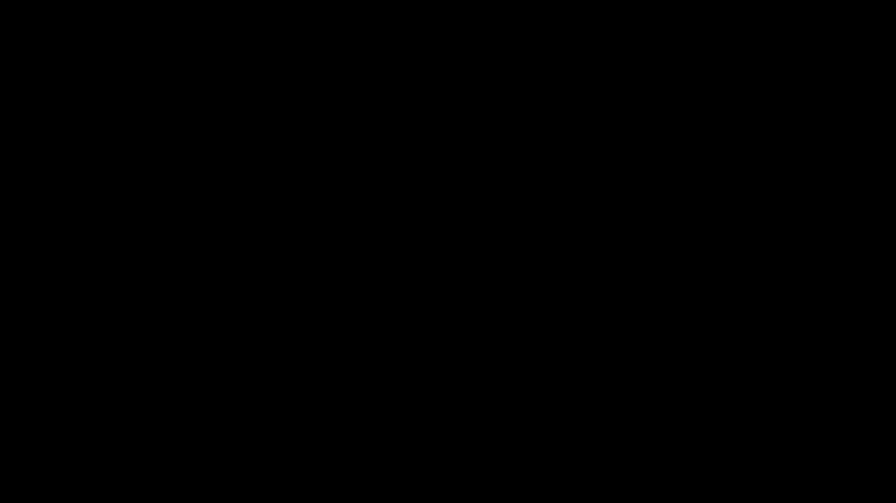
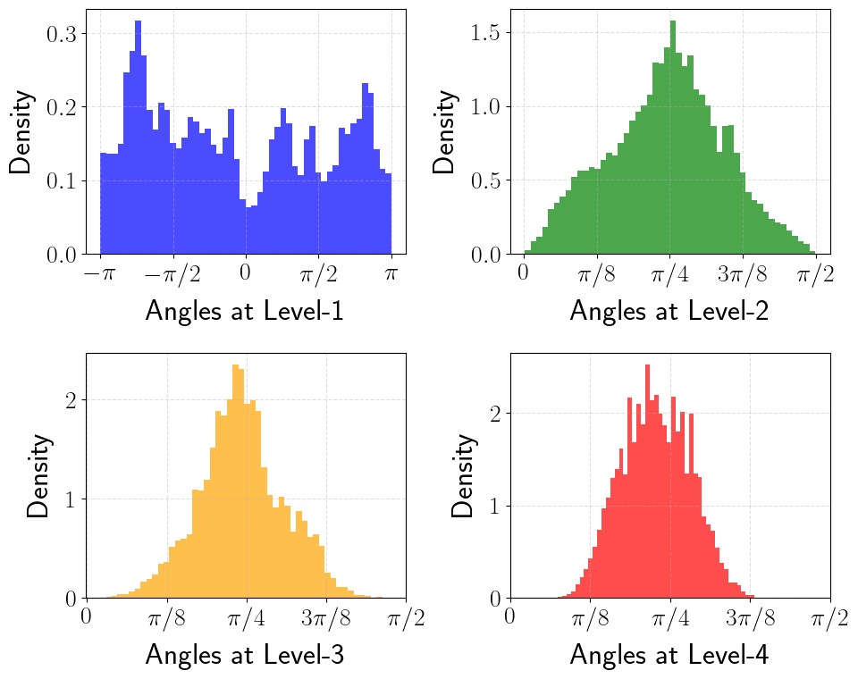
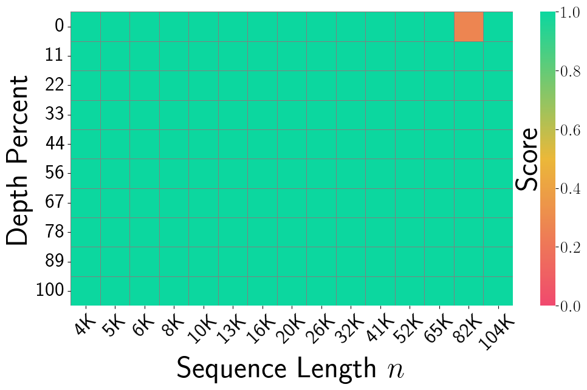

PolarQuant: Quantizing KV Caches with Polar Transformation

| Architecture Type | KV Cache Quantization for Transformer LLMs |
|---|---|
| Key Innovation | Recursive polar transformation of randomly preconditioned KV embeddings enabling parameter-free quantization |
| Performance Metric | Over 4.2× KV cache compression with best-in-class quality on long-context tasks |
| Computational Efficiency | Eliminates per-block normalization overhead; asymptotically optimal error bound via recursive algorithm |
| Venue | arXiv.org |
| Year | 2025 |
| Citations | 10 |
| DOI | Link |
PolarQuant is a novel quantization method for compressing Key-Value (KV) caches in large language models, introduced by Han et al. (2025) from KAIST, Google Research, and Yale University. It applies random preconditioning followed by a recursive polar coordinate transformation to KV embeddings, then quantizes the resulting angles rather than Cartesian coordinates—exploiting the key insight that, after random rotation, the angular distribution becomes tightly concentrated and analytically characterizable. PolarQuant achieves over 4.2× KV cache compression while outperforming state-of-the-art methods on long-context benchmarks, and uniquely eliminates the memory overhead of storing per-block quantization constants.
KV Cache Memory Bottleneck in Autoregressive Transformers
Autoregressive transformer models generate tokens sequentially and must store the key and value embeddings of all previously generated tokens to avoid redundant recomputation. This KV cache grows linearly with both sequence length and the number of attention layers and heads, creating severe memory pressure during inference, particularly for long-context scenarios.
Commercial LLM deployments must serve millions of concurrent sessions, each requiring its own dedicated KV cache. For a 32-layer, 32-head model with d=128 per head dimension, a 32k-token context requires gigabytes of memory per session, limiting concurrent users and maximum achievable context length.
Quantization offers an orthogonal solution: rather than reducing the number of cached vectors, it reduces the bit-width at which each vector element is stored. Traditional methods quantize blocks of values independently, storing a zero point and scale per block for dequantization. This overhead adds 1–2 additional bits per quantized number, significantly reducing effective compression.
Token eviction strategies prune unimportant cached tokens but suffer on tasks requiring precise long-range recall. PolarQuant addresses the quantization overhead problem directly, achieving parameter-free compression by exploiting the geometry of randomly rotated vectors.
Random Preconditioning and Angular Concentration
PolarQuant's central insight is that randomly rotating a vector before quantization dramatically concentrates the angular distribution. Multiplying a KV embedding vector by a random orthogonal matrix preserves all inner products while uniformly distributing coordinate energy across all dimensions.
After preconditioning, the angular coordinates of a high-dimensional vector concentrate sharply around predictable values whose distribution can be computed analytically. This concentration follows from the Johnson-Lindenstrauss phenomenon: random projections spread energy uniformly, causing angles to cluster near π/2 in high dimensions.
The known analytical form of the angular distribution allows constructing an optimal non-uniform quantization codebook without any per-sample calibration. This eliminates the need to store per-block normalization constants—the critical deficiency of traditional quantization methods.
The concentration effect becomes sharper as embedding dimension d increases, meaning PolarQuant's advantages grow with model size. For modern LLMs with dimensions of 4096 or more, 2–3 bits per angle achieve quality comparable to 8-bit uniform quantization of raw coordinates.
Recursive Polar Transformation Algorithm
Converting a d-dimensional vector to polar coordinates naively requires O(d²) trigonometric operations. PolarQuant introduces a recursive algorithm running in O(d log d) by exploiting a divide-and-conquer structure over vector dimensions.
The recursive algorithm splits the vector at each step into two halves, computes the norm of each half, and derives the corresponding splitting angle from the norm ratio. The algorithm recurses into each half, extracting finer-grained angular information at each level of the recursion tree.
Theorem 1 establishes that this recursive algorithm is asymptotically optimal for worst-case KV embedding vectors at any given bit budget. The approximation error is provably bounded and tight up to constant factors.
The recursive structure maps naturally to vectorized hardware instructions. The preconditioning step uses a random Hadamard matrix applicable in O(d log d) time via fast Walsh-Hadamard transforms, ensuring the full pipeline remains suitable for real-time token generation.
Analytically Optimal Quantization Codebook

A key theoretical contribution is the derivation of the exact analytical distribution of angles in the polar representation of randomly preconditioned vectors. For a d-dimensional vector multiplied by a random orthogonal matrix, coordinates are approximately normally distributed, and each polar angle follows a distribution expressible in closed form.
The angle θᵢ at level i is the arctangent of the ratio of two sub-vector norms. Because these norms follow chi distributions, the angle distribution can be expressed analytically as a function of dimensionality and recursion level.
This known distribution allows PolarQuant to precompute a minimum-distortion Lloyd-optimal codebook for each angle without any calibration samples. Uniform quantization, applied by standard methods, is suboptimal when distributions are non-uniform; PolarQuant's analytically designed codebook exploits the concentrated distribution for substantial additional compression.
The approach is also permutation-invariant: the same codebook applies to all tokens and all layers without any per-context adaptation, making it suitable for deployment without offline calibration.
Long-Context Evaluation and State-of-the-Art Comparison
PolarQuant was evaluated on the RULER benchmark suite, testing long-context understanding across multi-hop tracing, aggregation, and question answering over 4k–128k token contexts. These tasks stress-test quantization by requiring precise recall of specific information embedded in long contexts.
At over 4.2× compression (approximately 1.9 effective bits per float16 element), PolarQuant achieves the best quality scores among all compared methods including KIVI, KVQuant, and QJL. The advantage is most pronounced at the longest context lengths where parameter-free design provides the greatest benefit.
The comparison with QJL is particularly instructive: QJL uses JL transform plus 1-bit sign quantization achieving zero overhead but limited quality. PolarQuant extends this framework with richer polar coordinate structure and an analytically optimized codebook, achieving substantially lower quantization distortion at the same bit budget.
PolarQuant also outperforms data-dependent normalization methods, demonstrating that overhead costs of stored constants are not justified by their quality improvement. The analytical preconditioning achieves better quality without any stored statistics.
Concept Breakdown
Multiplication of a KV embedding by a random orthogonal matrix (typically a randomized Hadamard matrix) before quantization. Preserves inner products exactly while uniformly distributing coordinate energy, causing angular coordinates to concentrate around analytically predictable values.
A divide-and-conquer algorithm converting a d-dimensional vector to polar coordinates in O(d log d) time. At each level, the vector is split in two, a splitting angle is computed from the norm ratio, and recursion continues into each half to extract the full directional information.
A non-uniform quantization codebook derived from the closed-form distribution of polar angles after random preconditioning. The minimum-distortion codebook is constructed without calibration samples or stored statistics, placing quantization boundaries at equal-probability intervals under the known distribution.
PolarQuant stores no per-block quantization constants (zero points or scales). Traditional methods must store normalization parameters alongside quantized data, adding 1–2 bits per quantized number. PolarQuant's parameter-free design means the nominal bit-width equals the effective bit-width.
The theoretical guarantee ensuring attention scores from quantized KV caches remain accurate. Preconditioning is inner-product preserving, and the bounded polar quantization error ensures final attention scores computed via softmax over approximate inner products remain close to exact values.
Theorem 1 proves the recursive algorithm achieves asymptotically optimal reconstruction error for worst-case input vectors at any given bit budget. The bound is tight up to constant factors, meaning no alternative polar quantization algorithm can achieve substantially better worst-case performance.
Mathematics
Random orthogonal preconditioning
| Symbol | Meaning |
|---|---|
| $R$ | random orthogonal (Hadamard) matrix |
| $\mathbf{x}$ | original KV embedding vector |
| $\mathbf{x}_{\text{rot}}$ | randomly preconditioned vector |
Recursive polar angle computation
| Symbol | Meaning |
|---|---|
| $\theta_i$ | i-th polar angle |
| $\mathbf{x}_{i+1:d}$ | sub-vector from index i+1 to d |
| $\mathbf{x}_i$ | i-th coordinate of preconditioned vector |
Optimal non-uniform angle quantization
| Symbol | Meaning |
|---|---|
| $\hat{\theta}_i$ | quantized angle |
| $\mathcal{C}_i$ | analytically constructed codebook for angle i |
| $b$ | bits per angle |
Error bound (Theorem 1)
| Symbol | Meaning |
|---|---|
| $C$ | small universal constant |
| $b$ | bits per polar angle |
| $\mathbf{x}$ | original input vector |
Figures and Explanations
This figure shows angular coordinate distributions before and after random preconditioning. Without preconditioning (left), raw key vector angles exhibit diverse irregular distributions shaped by learned weight matrices. After preconditioning (right), angular distributions concentrate sharply around π/2 for all angles, matching the analytically derived distribution. The tight concentration demonstrates why few bits suffice per angle and why the same codebook applies across all tokens and layers.
